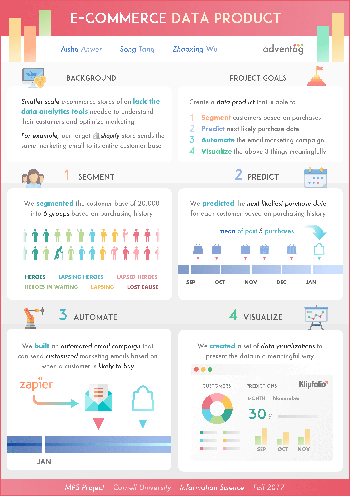
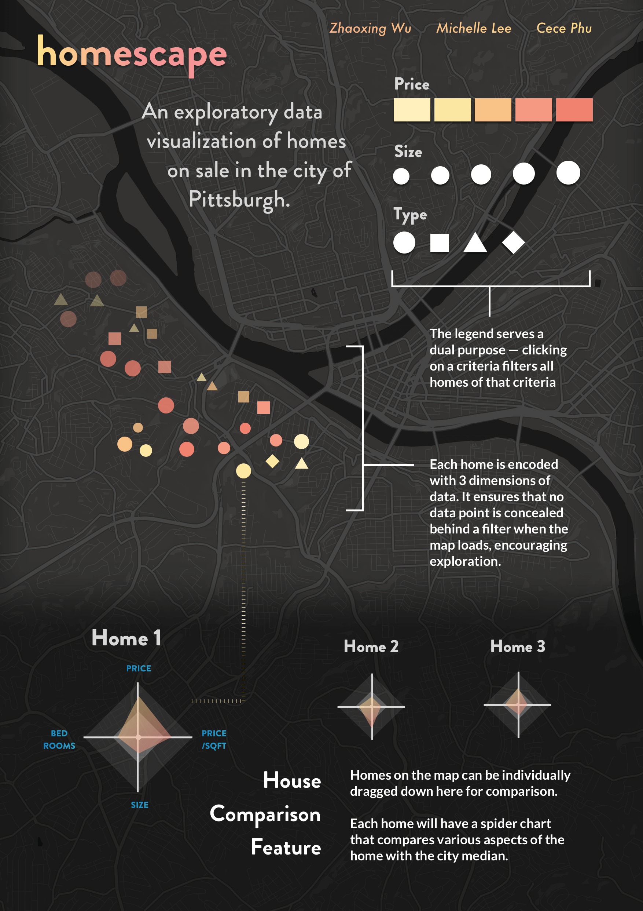

Gallery
A place for the little things that didn't make it onto a case study page.

Informational poster that I created to describe the data analysis work done by my group for our client company, Adventag.
This acrylic painting was the end result of my first attempt at discovering The Joy of Painting with Bob Ross.
An retro-style, arcade action game that I worked on in Junior year at UIUC. I created the game's pixel sprites from scratch and wrote code to power the game's logic. In the game, the player defeats zombie hordes by controlling a laser-spewing wizard.

Homescape is an interactive data visualization project that visualizes homes for sale in Pittsburgh. Each data point on the screen is a single home, and maps to multiple variables at the same time.